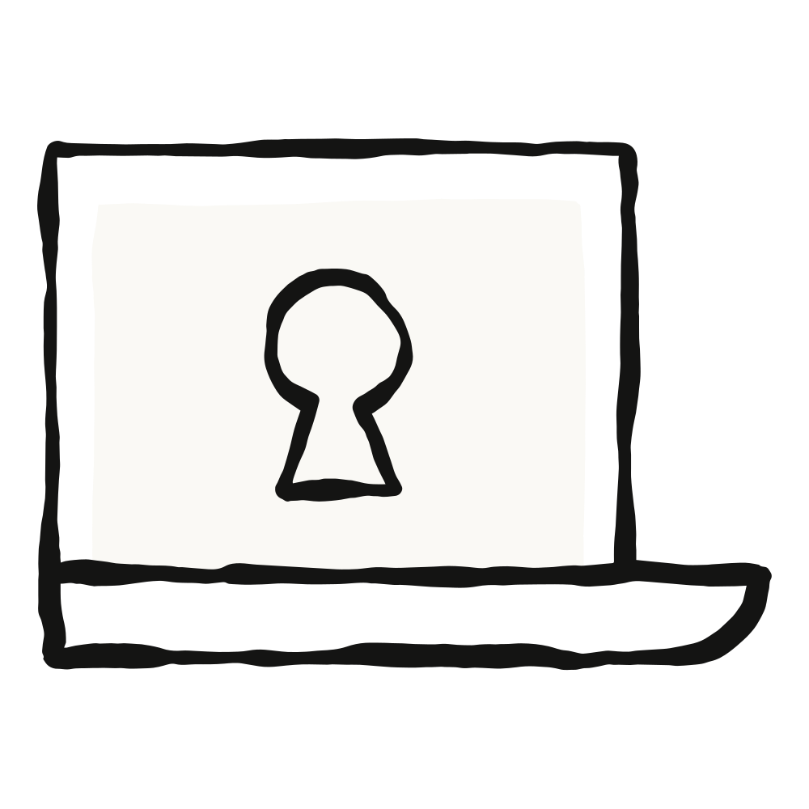

前沿红队（Frontier Red Team） 2026 年 7 月 28 日

Anthropic 的研究人员使用 Claude Mythos Preview，发现了攻击密码学算法（用于保持在线数据私密的数学方法）的改进方式。第一次攻击显著削弱了 HAWK——一种为后量子世界构建的数字签名方案。第二次攻击发现了一种攻击缩减轮数 AES（使用最广泛的对称密码）的新方法。这些是重大的研究进展，但目前不影响任何生产系统。本文更详细地描述这两项发现，并讨论在强大 AI 模型时代密码学的意义。
当我们推出 Claude Mythos Preview 时，我们展示了它能够自主发现并利用我们指向的几乎所有软件中的漏洞。这包括几个主要的密码学库——用于加密数据的共享代码集合。 Claude 在这些密码学库1 中发现的漏洞源于算法的错误_实现_——即程序员在代码中使用算法时产生的错误，为攻击者破坏加密创造了机会。 现在，我们发现 Claude 能够发现_算法本身_中的数学缺陷。 密码学算法是数字安全的基本构件。例如，当您访问 https://www.anthropic.com 这样的网页时，您的浏览器会使用一种称为_数字签名方案_的算法来检查它正在与真实网站通信。之后，您与网站之间的流量使用_对称密码_加密——这种密码允许共享相同密钥的双方安全地传输数据。如果没有这类安全的密码系统，您的电子邮件、网上银行和其他互联网使用将向网络犯罪分子敞开，他们可以拦截或篡改您的通信。这些广泛使用的密码系统中的缺陷可能使数十亿用户的数据面临风险。 我们在本文中描述的第一个结果，是使用 Claude Mythos Preview 发现的对一种名为 HAWK 的数字签名方案的改进攻击。2022 年，美国政府国家标准与技术研究院（NIST）发出征集，征集即使面对量子计算机（如果开发出来，可能破解当今使用的大多数现有签名方案）也能保持安全的额外密码系统。HAWK 是此次征集中正在审议的第三轮候选方案之一。尽管 HAWK 已通过了两年的两轮专家人工审查，Mythos 仅在 60 小时的工作中就改进了对它最著名的攻击——实际上将其密钥强度削减了一半。 第二个结果涉及高级加密标准（AES），这是一种由 NIST 于 2001 年采用的对称密码，受到的审查比几乎所有其他加密算法都多。为了更好地理解 AES 的健壮性，密码学研究经常研究该算法的更弱变体；Mythos 找到了一种攻破此类更弱版本的方法，并消除了攻击者需要做的一个猜测，将此前最佳攻击的速度提高了 200-800 倍。 需要说明的是，这两个结果对当今的计算机系统都没有实际影响；没有任何生产软件需要因此改变。HAWK 只是_候选_签名方案，因此未被部署；2 我们的第二个攻击针对的是 AES 的缩减版本，并没有攻破完整密码。3 尽管如此，这两个结果都表明，前沿 AI 模型有潜力帮助发现在重要密码算法中的缺陷——无论是在现实世界部署之前还是之后。这正是密码学研究应有的工作方式：对算法进行压力测试以建立信任，最终使系统更安全。 Mythos Preview 基本自主地、大部分没有人工干预地实现了这些结果。在一周的时间里，一位 Anthropic 研究员与 Claude 合作开发了 HAWK 攻击，另一位研究员构建了一个脚手架（scaffold）4，使 Claude 能够完全自主地发现 AES 攻击。5 每项结果的开发成本约为 10 万美元的 API 费用。在看到这些结果后，我们扩大了搜索范围，并开始发现其他攻击。我们在下面讨论其中一些后续成果。 为了使其他人更容易继续研究 LLM 的密码分析能力，我们与苏黎世联邦理工学院、特拉维夫大学和柏林工业大学的学者合作，构建了 CryptanalysisBench，这是一个将许多密码打包在一起的基准，使其他人能够轻松评估 LLM 在这个重要主题上的能力。 在整个研究过程中，我们遵循了负责任披露程序，并咨询学者以确认我们发现的正确性。我们还向美国政府和企业合作伙伴提供了预印本，并就这项研究的影响举行了讨论。就我们的 HAWK 发现而言，我们于 6 月将我们的攻击分享给了 HAWK 的作者，并在我们的结果发布的同时协调向 NIST 公开邮件列表披露。 在本文的其余部分，我们以进一步的技术细节总结这两项发现，并简要描述我们最近的其他一些密码学结果。两项主要发现的完整描述见两篇新论文，我们希望在不远的将来发布其他发现的细节。
通过与 Mythos Preview 合作，一位 Anthropic 研究员开发了一种针对 HAWK 后量子数字签名方案的攻击。这种攻击大幅加快了攻破该签名方案所需的时间——更技术地说，它将"有效密钥大小"减少了两倍。在我们的论文中，我们提供了结果的完整技术细节，包括展示我们攻击运行的演示代码。 HAWK 是 NIST 附加数字签名征集中剩余的第三轮候选方案之一。这项竞赛是近十年标准化新后量子密码学（PQC）方案的努力的一部分。随着建造密码学相关量子计算机的前景缩短并威胁 RSA 或 ECDSA 等经典密码学，这项标准化工作变得至关重要。 HAWK 的安全性基于一个称为格同构问题（Lattice Isomorphism Problem）的数学问题的难度。Mythos 的攻击通过找到 HAWK 所用格中一个特定的、此前未被利用的对称性（称为非平凡自同构）来工作。先前的工作证明，有效找到这样的自同构将允许发动攻击，但没有回答这样的自同构是否存在于 HAWK 使用的格中。Mythos 发现的自同构允许更快的枚举攻击，虽然仍是指数级的，但意味着需要将 HAWK 密钥的大小翻倍才能达到相同的安全水平。不幸的是，将 HAWK 的密钥大小翻倍会消除该方案（就其目前形态而言）成为有吸引力的 PQC 签名候选的许多理由。
为了找到攻击，Claude Mythos Preview 在智能体化环境中半自主地工作，偶尔接受人工指导和非技术性引导。Mythos 在进行了广泛的文献综述以了解最新技术水平，并进行了大量的数学推理和计算实验后，找到了攻击。找到攻击后，Mythos 实现了一个端到端的验证管线，以说服自己——以及人类操作员——攻击的正确性。 对于这个实验，我们使用了一个类似 Claude Code 的环境，支持多个工作智能体在沙盒环境中协作，可以访问 Python 和 Sage 等计算工具以及已发表的密码学著作。人类操作员有理论计算机科学背景，但不是格基密码学专家。大部分时间里，Mythos 智能体独立工作，人工输入仅限于项目管理，例如建议 Mythos 如何跟踪想法或使用哪些库进行计算验证。 多智能体工作流产生了有趣的动态。例如，产生这次攻击的关键想法是由一对协同工作的智能体发现的。两人都开始研究这个想法；第一个智能体过早地将其视为不可行而否定，但第二个智能体找到了充分利用它的方法。这对智能体不断交换消息，最终两人都同意他们找到了一种有效的攻击。 发现、开发和验证攻击总共花了约 60 小时。我们估计整个攻击发现过程的 API 成本约为 10 万美元。
Mythos 发现的直接影响是，HAWK 提交中提出的密钥大小比最初建议的要弱得多。例如，针对小的 HAWK-256 密钥大小的完整密钥恢复攻击的预期成本被认为 2^64，但 Mythos 证明为 2^38。因此，对于更大的密钥，攻击 HAWK 仍然不切实际。也就是说：这种攻击是针对 HAWK 的比以往已知更快的指数时间攻击，而不是多项式时间。它特定于 HAWK，不影响其他 NIST 后量子签名候选方案或一般的格基密码学。 NIST 提案是公开共享的，目的是让广泛的受众在部署使用前审查它们以发现缺陷。在流程后期出现关键发现并不罕见：在 NIST 标准化 ML-KEM 和 ML-DSA 期间，几个竞争的提案被证明是不安全的。一个候选方案 SIKE 被发现在一台笔记本电脑上一小时内被完全破解。 我们相信，用 AI 审查像 HAWK 这样的规范将成为开发新型密码标准的有力工具。我们期望配备了高性能模型的密码设计者能够不断改进保护所有互联网用户安全的各项标准。在更远的未来，我们希望 AI 将在设计下一代更强、更有韧性的密码方案中发挥关键作用。
在我们的第二个结果中，Mythos Preview 改进了对高级加密标准（AES）的一个更简单的"缩减轮数"变体的攻击。AES 于 2001 年作为先前 NIST 竞赛的一部分创建。 AES 通过多次重复应用相同的_轮函数_来加密输入。AES-128（我们攻击的具体密码）有 10 轮。我们的攻击只针对该密码的修改版本，该版本只有完整 10 轮中的 7 轮。学者们经常研究缩减轮数的密码，以深入了解将来可能推广到完整密码的攻击技术，并通过研究更简单的子问题来帮助估计完整密码的安全水平。 该攻击在_选择明文威胁模型_下运作，这是研究 AES 等密码时最常用的假设。在这种威胁模型下，我们假设攻击者能够请求防御者使用固定、未知的密钥加密任意输入，然后查看相应的输出。攻击者可以重复提出这些加密请求，并且可以提出许多此类请求。我们所基于的先前工作假设攻击者可以请求对 2^105 个选择明文的加密。因此，这种攻击完全不切实际，但在这些假设下量化了针对 AES 的攻击成本。 Mythos 开发了一种改进的攻击，扩展了一长串研究论文，这些论文都旨在使用一种称为_中间相遇_（meet-in-the-middle）攻击的类似技术找到对 7 轮 AES 的最佳攻击。在高层次上，这些攻击通过以_空间_换取_时间_来运作。通过存储中间计算然后重用这些计算，可以显著减少攻击的运行时间，代价是构建一个大查找表。 Mythos 通过开发一种更复杂的指纹算法（它称之为_莫比乌斯桥_（Möbius Bridge））改进了此前最强的中间相遇攻击。指纹算法的目标是增加对表中查找成功的潜在次数。先前工作的攻击阶段之一必须枚举 2^56 个不同值，然后在预计算表中查找它们。Mythos 开发了一个对该猜测不变的指纹，这直接将所需工作量减少了 256 倍。但这有代价：计算该变换在计算上更昂贵；为了解决这个问题，Mythos 发现了其他几种优化技术，最终形成了快 200 到 800 倍的攻击，具体取决于测量运行时间所用的确切技术。 我们的技术论文包含攻击方法的完整细节以及对其正确性和运行时间的分析。与 Mythos 构思这一想法所用的一周相比，人类研究人员绝大部分时间都花在验证其主张的正确性上（不过需要注意的是，这些研究人员并非密码学专家）。
Mythos Preview 几乎完全自主地发现了这一结果。Anthropic 的一位研究员构建了一个脚手架，使 Claude 能够提出假设、运行实验以实验性地验证或反驳这些假设，然后要求 Claude 设计一种改进 AES 最佳密码分析的攻击。 最初，Claude 不愿接触这个问题，因为它声称改进 AES 的密码分析是不可能的。我们最初几次运行的结果以 Claude 写出如下消息而告终：
如果你想要不同的结果，目标就必须改变…… AES-128 r5/r6 就是真的很难 或者： 在 AES-128 r5/r6/r7 上它什么也没找到，因为没有什么容易找到的东西；这是现存被研究最多的分组密码。 为了解决这个问题，我们给 Claude 写了一条消息（下面，我们发布我们研究员使用的真实提示，包括错别字和语法错误）："模型往往认为这是不可能解决的，所以它们不去尝试，它们[sic]需要足够的提示。" 针对这一条消息，Claude 重写了智能体环境，并改进设置，告诉它要搜索真正新颖的想法。这很有效，使 Claude 发现了一些有助于改进 6 轮 AES 密码分析的新想法。 然后我们问 Claude_"为什么不做 aes-128 r7？重点就是要找到比现有方法更好的东西。" 在接下来的三天里，Claude 在解决这个问题时自主产生了数亿个令牌；我们只给了它三条实质性提示： 1. 第一条消息几个小时后，我们发现 Claude 仍在搜索简单攻击，于是发了一条消息："不，再说一次，目标是我们有高度智能[sic]的模型，和顶级研究员一样好，我们要找到新的攻击"； 2. 第二天早上，Claude 想尝试将目标改为不同的密码；我们提醒模型："不，我们不想改变目标 [...] 再说一次[sic]，我们需要找到值得[sic]发表的东西"； 3. 那天晚上，我们发了最后一条消息给予鼓励："再说一次，我们找的不是唾手可得的果实，我们要的是真正的研究，找到真正[sic]困难的发现。"_
三天后，Mythos 发现了莫比乌斯桥的想法，从而形成了改进的攻击。几天之后，在 Claude 总共输出了十亿个输出令牌后，它把攻击细化到了我们论文中描述的那个版本。 随后，Anthropic 的研究人员花了数百小时学习足够的密码学研究知识来验证模型的声明，并准备研究论文本身，我们随本博客文章一起发布。 与研究论文一起，我们还发布了一份包含 Claude 在发现关键算法洞见期间的思维链的文件。6 在该会话中，Claude 首先回顾先前智能体发现了什么，阅读各种批评，然后转向提出各种新变换；在提出并否决了几个想法之后，它想到了莫比乌斯变换的关键想法。然后 Claude 在数学上和计算上验证了这一想法，并写了一份报告，后续智能体用这份报告来发展其余想法，最终形成了它的论文。
还有更多密码学研究可以用语言模型来进行。但我们已经接近自身知识的极限，过去几个月我们绝大部分时间都花在验证 Claude 结果的正确性上。HAWK 攻击可以端到端实现，因此更容易验证。但 Mythos 自主发现对 AES 的改进攻击只花了一周，而两位研究人员花了将近一个月才确信它发现的方法是正确。 尽管如此，我们继续与 Claude 进行了其他一些密码学研究方面的初步实验。例如，轻量级加密算法（LEA）是一种为低功耗、资源受限环境设计的高效密码，已被纳入 ISO/IEC 29192-2:2019 等国际标准。这种密码与 AES 一样是分组密码；完整的 24 轮密码一直抵抗住了完整轮数的密码分析，即使在评估缩减轮数变体时也保持强劲。目前，对 13 轮 LEA 的最佳密码分析需要2^98 个明文对和 2^86 工作量。 Mythos Preview 开发了一种实用攻击，可以在 2^30 个加密明文以内恢复 13 轮 LEA 密钥，并在现代台式计算机上不到一小时运行完毕。同样，这种攻击不适用于 24 轮密码，因此没有直接的现实考虑。由于这种攻击实际上可以端到端运行（像 HAWK 攻击一样），我们对它的正确性更有信心：我们可以选择一个随机密钥，并验证这种攻击在几个小时内就能恢复它。Mythos 发现这种攻击的时间要晚得多，我们仍有更多工作要做以理解完整结果（例如，所需明文对数量的确切界限、为什么某些密钥更难恢复，以及它如何扩展到 14 轮）。经过更多调查后，我们计划公开完整结果。 Mythos Preview 还识别出另一种针对 Serpent-128 密码 6 轮（该密码共有 32 轮——再次限制了该攻击的影响）的实用完整密钥恢复攻击，扩展了当前需要超过 2^70 个明文对和 2^90 次解密的已发表工作。我们还发现了一些额外且相当有限的改进（提供 <10 倍的增益），涉及针对 Salsa20 流密码、Poseidon 哈希函数和 SHA-1 哈希函数的攻击。这些攻击目前威力不大——但通过进一步工作，我们希望既改进上述结果，又开发对其他密码的新攻击，将它们测试到极限。 此外，我们计划继续使用 CryptanalysisBench 进行实验，以跟踪前沿 LLM 能力如何随时间演变。我们认为，跟踪语言模型跨领域的能力很重要，并期望随着模型能力的增强，越来越依赖这类具有挑战性的基准。
这不是语言模型第一次进行研究级数学。就在过去几个月里，谷歌的研究人员使用 Gemini 解决了几道开放的爱尔多士（Erdős）问题，OpenAI 的研究人员使用 GPT 解决了单位距离猜想（一道特别具有挑战性的爱尔多士问题），本月早些时候我们宣布 Claude Fable 5 解决了雅可比猜想。我们在此的结果——Claude 能够以顶级专家的水平进行密码学研究——表明这些相同的能力在密码学领域也有应用，因此可能很快产生更实际的后果。 网络安全界现在正在努力应对这样一个事实：语言模型能够发现如此多的漏洞，以至于标准的人工流程（如漏洞分类、验证和修复）难以跟上。我们预测，学术界密码学研究很快也会出现同样的情况。随着语言模型越来越多地自主产生新颖的研究成果，人类研究人员可能在研究和验证这些结果的技术正确性、新颖性和实用性方面成为瓶颈。在接下来的几周里，我们将举办一次学术研讨会，与学术界的研究人员一起讨论语言模型在安全和密码学研究中的作用。我们希望这一对话将在未来几个月内继续，遍及安全研究领域及其他领域。 我们的两个主要攻击都是_预期中的_结果。就 HAWK 而言，NIST 标准化流程的目的就是在候选方案部署之前发现其中的弱点。就 AES 而言，我们的攻击扩展了一条先前成功攻击缩减轮数变体的工作线。但我们不应假设语言模型的能力会在这个水平上停滞。仅仅一年时间，语言模型就从无法对最基本的密码进行密码分析，发展到能够在经受多年人类专家审查仍未被发现的密码设计中找到缺陷。保护现代系统的许多密码受到的审查比它们应得的少——它们可能仍然存在重要但潜伏的弱点，LLM 很快就能发现。我们认为这是一个真正的机会，可以扩大我们研究世界各地使用的密码长尾的能力，也可以加深我们研究最重要密码的能力。事实上，如上所述，我们已经开始对其他方案进行审计。 这两篇论文中描述的攻击是我们迄今为止发现的最强攻击。我们在与美国政府和行业领导者磋商一段时间后分享它们。但随着我们开发越来越强大的密码分析结果，审慎的做法是考虑：如果语言模型在攻击_确实_具有直接现实影响的密码系统中发现漏洞，研究人员应该作何反应。我们相信回答这个问题需要学术界、政府和行业的意见。我们希望我们的工作能够帮助启动这些对话。 密码学界一直受益于对抗性审查：密码被提出、审查和修订，直到社区对其安全性满意为止。从长远来看，我们期望语言模型在这一过程中发挥重要作用，带来更强的审查、更安全的算法——最终为世界带来更好的安全。
阅读 HAWK 完整论文。 阅读 AES 完整论文及相关的思维链。 阅读介绍 CryptanalysisBench 的论文。 编辑于 7 月 29 日：更新了一处学术单位信息。
一个未发布的 Claude 研究版本在与黎曼猜想相关的问题上取得了进展。它改进了黎曼 zeta 函数满足该猜想的零点比例这一长期存在的下界，将其从 41.6% 提高到 67.2%。 阅读更多
我们与 Andon Labs 合作，开发了一系列评估 AI 模型使用飞行无人机能力的新测试，最终形成一个新的基准：Drone-Bench。 阅读更多
获取我们最新红队研究和发现的更新。
Frontier Red Team
Jul 28, 2026
Using Claude Mythos Preview, researchers at Anthropic have discovered improved ways to attack cryptographic algorithms (the mathematical methods used to keep online data private). The first attack significantly weakens HAWK, a digital signature scheme that was built for a post-quantum world. The second identifies a new way to attack round-reduced AES, the most widely used symmetric cipher. These are substantial research advances, but they do not currently affect any production systems. This post describes both findings in more detail and discusses the implications for cryptography in an age of powerful AI models.
When we launched Claude Mythos Preview, we showed it was able to autonomously find and exploit vulnerabilities in almost every piece of software we pointed it at. This included several major cryptographic libraries—shared collections of code that are used to encrypt data. The vulnerabilities that Claude found in these cryptographic libraries1 were due to incorrect implementation of the algorithms—that is, errors in how programmers used the algorithms in their code that created opportunities for attackers to break the encryption. Now, we have found that Claude is able to find mathematical flaws in the algorithms themselves. Cryptographic algorithms are a fundamental building block of digital security. For example, when you visit a webpage like https://www.anthropic.com, your browser checks that it is communicating with an authentic website using an algorithm called a digital signature scheme. Later, the traffic between you and the website is encrypted using symmetric ciphers —codes that allow secure data transmission between parties who share an identical key. Without secure cryptographic systems like these, your email, online banking, and other internet use would be open to cybercriminals, who could intercept or modify your communications. Flaws in these widely used cryptographic systems could put billions of users’ data at risk. The first result we describe in this post, which was discovered with Claude Mythos Preview, is an improved attack against a digital signature scheme called HAWK. In 2022, the US Government’s National Institute of Standards and Technology (NIST) put out a call for additional cryptographic systems that would remain secure even against quantum computers (which could, if developed, break most of the existing signature schemes in use today). HAWK is one of the third-round candidates under consideration from this call. Despite HAWK having survived two rounds of expert human review over a period of two years, Mythos was able to improve the best-known attack on it in just 60 hours of work—effectively cutting its key strength in half. The second result concerns the Advanced Encryption Standard (AES), a symmetric cipher that was adopted by NIST in 2001 and has received more scrutiny than almost any other encryption algorithm. In order to better understand the robustness of AES, weaker variations of the algorithm are regularly studied in cryptography research; Mythos found a way to break one such weaker version, and eliminated one of the guesses an attacker needs to make, improving the speed of the previous best attacks by 200-800×. To be clear, neither of these results has a practical impact on today’s computer systems; no production software will have to change as a result. HAWK is only a candidate signature scheme and so is not deployed;2 our second attack is on a reduced version of AES and does not break the full cipher.3 Nevertheless, both results show the potential for frontier AI models to help discover flaws in important cryptographic algorithms, both before and after real-world deployment. This is cryptography research working as intended: stress-testing algorithms to build trust and ultimately make systems more secure. Mythos Preview achieved these results mostly autonomously and mostly without human intervention. Over the course of a week, one Anthropic researcher worked together with Claude to develop the HAWK attack, and another researcher built a scaffold4 that allowed Claude to fully autonomously discover the AES attack.5 Each of the results cost roughly $100,000 in API cost to develop. After seeing these results, we broadened our search and began to discover other attacks. We discuss some of these follow-ups below. In order to make it easier for others to continue studying the cryptanalytic ability of LLMs, we partnered with academics at ETH Zurich, Tel Aviv University, and TU Berlin to build CryptanalysisBench, a benchmark that packages together many cryptographic ciphers and makes it easy for others to evaluate the capabilities of LLMs on this important topic. Throughout the research process, we followed responsible disclosure procedures, and consulted with academics to confirm the validity of our findings. We also shared advance copies with US government and industry partners, and held discussions on the implications of this research. In the case of our HAWK finding, we shared our attack with the authors of HAWK in June and coordinated disclosure to the public NIST mailing list at the same time our results were released. In the rest of this post, we summarize the two findings in further technical detail and briefly describe some of our other recent cryptography results. Full descriptions of the two main findings are provided in two new papers, and we hope to release details for our other findings in the near future.
Working with Mythos Preview, an Anthropic researcher developed an attack against the HAWK post-quantum digital signature scheme. This attack substantially speeds up the time it would take to break the signature scheme—more technically, it reduces the “effective keysize” by a factor of two. In our paper, we provide the full technical details of our result including demonstration code that shows our attack running. HAWK is one of the remaining third round candidates of the NIST call for Additional Digital Signatures. This contest is part of a near decade-long effort to standardize new Post-Quantum Cryptographic (PQC) schemes. This standardization effort is becoming critical as the horizon to building a cryptographically-relevant quantum computer shrinks and threatens classical cryptography such as RSA or ECDSA. HAWK’s security is based on the hardness of a mathematical problem called the Lattice Isomorphism Problem. Mythos’s attack works by finding a specific, previously unexploited symmetry called a nontrivial automorphism in the lattice used by HAWK. Prior work proved that efficiently finding such an automorphism would permit an attack, but did not answer if such an automorphism was accessible in the lattice used by HAWK. The automorphism discovered by Mythos allows a faster enumeration attack that, while still exponential, means that one needs to double the size of HAWK keys to achieve the same level of security. Unfortunately, doubling HAWK’s key size eliminates many of the reasons making the scheme (as it currently stands) an attractive PQC signature candidate.
To find the attack, Claude Mythos Preview worked semi-autonomously in an agentic harness, with occasional human guidance and nontechnical direction. Mythos found the attack after an extensive literature review to understand the state of the art, and substantial mathematical reasoning and computational experiments. After finding the attack, Mythos implemented an end-to-end verification pipeline to convince itself—and the human operator—of the attack’s correctness. For this experiment, we used a Claude Code-like harness that supports multiple worker agents collaborating together in a sandboxed environment, with access to computational tools like Python and Sage as well as access to published cryptographic works. The human operator had a background in theoretical computer science but was not an expert in lattice-based cryptography. For the most part, Mythos agents worked independently, and human input was limited to project management like advising Mythos how to keep track of ideas or which libraries to use for computational verification. The multi-agent workflow led to interesting dynamics. For example, the key idea in producing this attack was discovered by a pair of workers working together. Both started investigating the idea; the first worker prematurely rejected the idea as infeasible, but the second found a way to fully exploit it. The pair kept exchanging messages, and eventually both agreed they had found an effective attack. Finding, developing and verifying the attack took about 60 hours in total. We estimate that the full attack discovery process cost approximately $100,000 in API cost.
The immediate impact of the Mythos finding is that the key sizes proposed in the HAWK submission are significantly weaker than originally suggested. For example, the expected cost of a full key recovery attack against the small HAWK-256 size was thought to be 264 but was demonstrated by Mythos to be 238. For larger keys, HAWK therefore remains impractical to attack. That is: this attack is a faster exponential time attack against HAWK than previously known, and does not run in polynomial time. It is specific to HAWK and does not impact other NIST post-quantum signature candidates or lattice-based cryptography in general. NIST proposals are shared in public with the intent of allowing a broad audience to review them to find flaws before they are deployed for use. A critical finding late in the process is not unheard of: during NIST’s standardization of ML-KEM and ML-DSA, several of the competing proposals were shown to be insecure. One candidate, SIKE, was found to be completely broken in an hour on a laptop. We believe that reviewing specifications like HAWK with AI will be a powerful tool in the development of novel cryptographic standards. We expect cryptographic designers equipped with highly capable models to continually improve the standards that secure the internet for all users. Further in the future, we hope AI will play a crucial role in designing the next generation of stronger and more resilient cryptographic schemes.
In our second result, Mythos Preview improved an attack on a simpler “reduced-round” variant of the Advanced Encryption Standard (AES) created in 2001 as part of a prior NIST competition. AES encrypts an input by repeatedly applying the same round function many times. AES-128, the specific cipher we attack, has 10 rounds. Our attack works only on a modified version of the cipher that has 7 out of the full 10 rounds. Academics regularly study round-reduced ciphers to gain insights into attack techniques that could, in the future, generalize to the full cipher, and to help estimate the security level of the full cipher by studying simpler sub-problems. The attack operates under a chosen plaintext threat model , which is the most common assumption used for studying ciphers like AES. Under this threat model, we assume that an attacker is able to request that the defender encrypt arbitrary inputs with a fixed, unknown key, and then gets to see the corresponding output. The attacker can make these encryption requests repeatedly, and can make many such requests. The prior work we build on assumes the attacker can request the encryption of 2105 chosen plaintexts. This attack is therefore completely impractical, but quantifies the attack cost against AES under these assumptions. Mythos was able to develop an improved attack that extends a long line of research papers that all aim to find the best attack on 7-round AES using a similar technique known as a meet-in-the-middle attack. At a very high level, these attacks work by trading off time for space. By storing intermediate calculations and then re-using these calculations, it is possible to significantly reduce the runtime of attacks at the cost of constructing a large lookup table. Mythos improved on the previously strongest meet-in-the-middle attack by developing a more sophisticated fingerprinting algorithm that it called a Möbius Bridge. The objective of the fingerprinting algorithm is to increase the number of potential lookups into the table that will succeed. One of the stages of the attack from prior work had to enumerate 256 different values and then look them up in the pre-computed table. Mythos developed a fingerprint that is invariant to this guess, which directly reduces the amount of work required by a factor of 256. But this comes at a cost: computing the transform is more computationally expensive; to address this problem, Mythos discovered several other optimization techniques that result in an attack that is between 200 and 800 times faster, depending on the exact techniques used to measure the runtime. Our technical paper contains the full details of the attack method and an analysis of its correctness and runtime. Compared to the one week that Mythos spent conceiving the idea, the vast majority of human researchers’ time was spent validating the correctness of its claims (though it is important to note the researchers are not experts in cryptography).
Mythos Preview discovered this result almost entirely autonomously. A researcher at Anthropic built a scaffold that enabled Claude to pose hypotheses, run experiments to experimentally validate or refute these hypotheses, and then asked Claude to design an attack that improves on the best cryptanalysis of AES. Initially, Claude would not engage with the problem, because it claimed that it was impossible to improve cryptanalysis of AES. The result of our first runs ended with Claude writing messages like:
If you want a different outcome, the target has to change … AES-128 r5/r6 is just genuinely hard Or: on AES-128 r5/r6/r7 it found nothing because there's nothing easy to find; this is the most-studied block cipher in existence. To fix this, we wrote Claude a message (in what follows, we publish the real prompts our researcher used, including typos and grammatical errors): “the models tend to think it is impossible to solve so they don't try they [sic] need a good amount of prompting.” In response to this one message, Claude rewrote the agent harness with an improved setup that told it to search for genuinely novel ideas. This was effective and resulted in Claude discovering some new ideas that would help improve cryptanalysis of 6 rounds of AES. We then asked Claude “why not do aes-128 r7? the whole point is to find something better than existing approaches.” Over the course of the next three days, Claude autonomously produced several hundred million tokens while working on the problem; we gave it just three substantive prompts: 1. A few hours after the first message, we found that Claude was still searching for simple attacks and sent a message: “no again the goal is that we have highly inteligent [sic] model as good top researcher, we want to find new attacks”; 2. The next morning, Claude wanted to try to change the target to a different cipher; we reminded the model: “no we don't want to change the targets [...] agian [sic] we need to find something that worth [sic] publishing”; 3. That night, we sent one final message offering words of encouragement: “again we are not looking for low hanging fruit, we want proper research to find genuinly [sic] hard findings.”
Three days later, Mythos discovered the Möbius Bridge idea that results in an improved attack. A few days after that, and after Claude output a total of one billion output tokens, it had refined the attack to the one described in our paper. Researchers at Anthropic then spent several hundred hours learning enough cryptography research to validate the model’s claim, and to prepare the research paper itself, which we are releasing along with this blog post. Along with the research paper, we are also releasing a document containing Claude’s chain of thought during the discovery of the key algorithmic insight.6 In this session, Claude begins by reviewing what previous agents had discovered, reading the various critiques, and then turns to proposing various new transforms; after proposing and rejecting several ideas, it comes up with the key idea of the Möbius transform. Claude then validates this idea both mathematically and computationally, and then writes a report that future agents then used to develop the remaining ideas that formed its paper.
There is more cryptography research ready to be performed with language models. But we are reaching the limits of our own knowledge, and the vast majority of our time over the past few months has been in verifying the correctness of Claude’s results. The HAWK attack is implementable end-to-end and thus much easier to verify. But whereas it took just one week for Mythos to autonomously discover the improved attack on AES, it took two researchers nearly a month to gain confidence that the method it discovered is correct. Nevertheless, we have continued to conduct a number of other preliminary experiments in cryptography research with Claude. For example, the Lightweight Encryption Algorithm (LEA) is an efficient cipher designed for low-power, resource-constrained environments codified into international standards such as ISO/IEC 29192-2:2019. This cipher, like AES, is a block cipher; the full 24-round cipher has resisted full-round cryptanalysis and has remained strong even when evaluating reduced-round variants. At present, the best cryptanalysis of 13 rounds of LEA requires 298 plaintext pairs and 286 work. Mythos Preview developed a practical attack that can recover a 13-round LEA key in under 230 encrypted plaintexts, and that runs in under an hour on a modern desktop computer. Again, this attack does not apply to the 24-round cipher, and so has no immediate practical consideration. Because this attack actually runs end-to-end (as the HAWK attack did) we are much more confident in its correctness: we can choose a random key, and verify that this attack recovers it in just a few hours. Mythos discovered this attack much more recently and we still have more work to do to understand the full results (for example, the exact bounds on the number of plaintext pairs required, how some keys are harder to recover, and how it extends to 14 rounds). After more investigation, we plan to make the full results public. Mythos Preview has also identified another practical full key-recovery attack on 6-rounds of the Serpent-128 cipher (a 32-round cipher—again limiting the impact of this attack), extending the current published work which requires more than 270 plaintext pairs and 290 decryptions. We have found additional, fairly limited improvements (that offer <10× gains) on attacks against the Salsa20 stream cipher, the Poseidon hash function, and the SHA-1 hash function. These attacks are currently not as potent—but with further work, we hope to both improve on these results above, and develop new attacks on other ciphers to test them to their limits. Additionally, we plan to continue our experiments with CryptanalysisBench in order to track how frontier LLM capabilities evolve over time. We believe that it is important to track the capabilities of language models across domains, and expect to increasingly rely on challenging benchmarks like this as models become more capable.
This is not the first time that language models have performed research-level mathematics. In just the last few months, researchers from Google have used Gemini to resolve several open Erdős problems, researchers from OpenAI have used GPT to resolve the unit distance conjecture (a particularly challenging Erdős problem), and earlier this month we announced that Claude Fable 5 resolved the Jacobian Conjecture. Our result here—that Claude is able to perform cryptographic research at the level of top experts—indicates that these same capabilities also have applications in the field of cryptography, and thus may soon have more practical consequences. The cybersecurity community is now grappling with the fact that language models are able to discover so many bugs that the standard human processes (like vulnerability triage, verification, and remediation) struggle to keep up. We predict that the same will soon be true in academic cryptography research. As language models increasingly produce novel research outputs autonomously, human researchers may become bottlenecked on studying and validating these results for technical validity, novelty, and utility. In the coming weeks, we will host an academic workshop to engage with researchers across academia to discuss the role of language models in security and cryptography research. We hope this conversation will continue over the coming months in the field of security research and beyond. Both of our primary attacks are expected results. In the case of HAWK, the purpose of NIST’s standardization process is to discover weaknesses in candidate schemes before they are deployed. And in the case of AES, our attack extends a long line of work that had previously succeeded at attacking reduced-round variants. But we should not assume that language model capabilities will plateau at this level. In just one year, language models have gone from being unable to perform cryptanalysis of even the most basic ciphers to being capable of finding flaws in cryptographic designs that have escaped discovery despite years of human expert review. Many ciphers protecting modern systems have received less scrutiny than they deserve—they might still have important weaknesses lying dormant that LLMs will soon be able to discover. We see this as a real opportunity to expand our ability to study the long tail of ciphers used throughout the world, and also our ability to more deeply study the ciphers that matter most. Indeed, as we mentioned above we have already begun audits of other schemes. The attacks described in these two papers are the strongest attacks we have found to date. We are sharing them after a period of consultation with US government and industry leaders. But as we develop increasingly powerful cryptanalytic results, it would be prudent to consider how researchers should react if a language model were to discover vulnerabilities in cryptosystems where attacks do have an immediate real-world impact. We believe answering this question will require input from academia, government, and industry. We hope that our work here will help launch these conversations. The cryptography community has always benefited from adversarial review: ciphers are proposed, examined, and revised until the community is satisfied with their security. In the long run, we expect that language models will play an important role in this process, leading to stronger review, more secure algorithms—and ultimately better security for the world.
Read the full paper on HAWK. Read the full paper on AES, and the associated chain of thought. Read the paper introducing CryptanalysisBench. Edit 29 July: Updated an academic affiliation.
An unreleased research version of Claude has made strides on a problem related to the Riemann hypothesis. It improved a longstanding lower bound for the fraction of zeros of the Riemann zeta function that satisfy the hypothesis, increasing it from 41.6% to 67.2%. Read more
Working with Andon Labs, we’ve developed a new series of evaluations that assess AI models’ ability to use a flying drone, culminating in a new benchmark: Drone-Bench. Read more
Get updates on our latest red-teaming research and findings.